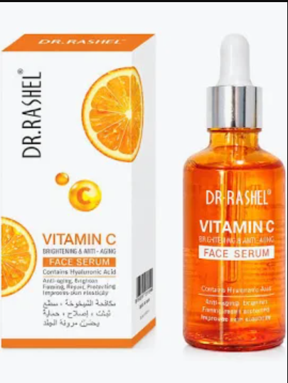

"This serum completely transformed my morning glow. My post-acne dark spots faded faster than with any other product!"
Vitamin C Brightening & Anti-Aging Face Serum
Leaves skin clarified to reveal radiant skin and a renewed glow. Contains Hyaluronic Acid to firm, repair, and improve skin elasticity.
R92.00 R109.00

Fades dark spots & Hyperpigmentation
Vitamin C blocks melanin production to fade sun spots and acne scars, giving you a more even skin tone.
Boosts Collagen
It triggers the production of new collagen to firm your skin and smooth out fine lines.
Protects Against Damage
It acts as an antioxidant shield to neutralize harmful pollution and UV rays that age the skin.
Hydrates & Soothes
It helps your skin retain moisture better while calming redness and inflammation.
The Power Behind the Glow
Click an ingredient to explore how it works for your skin.
15% L-Ascorbic Acid
The gold standard of Vitamin C that actively brightens dull skin, fades dark spots, and shields skin cells from daily oxidative stress.
How to apply
Three simple steps to seamless daily radiance.
Step 1 - Cleanse
Start with a fresh, clean face using your favorite gentle cleanser.
Step 2 - Drop
Apply 3-4 drops directly onto your face and neck.
Step 3 - Protect
Lock it in with moisturizer and SPF to protect your skin all day.
94%
Noticed brighter skin in 2 weeks
91%
Saw reduced dark spots
98%
Felt zero irritation or redness
"Super lightweight, absorbs instantly without feeling tacky, and layers beautifully under sunscreen."
Frequently Asked Questions
Apply it in the morning after cleansing and before your moisturizer and SPF to maximize antioxidant protection against daily pollution.
Yes! Our formula includes soothing Hyaluronic Acid and Vitamin E to prevent irritation, though we always recommend patch-testing first.
Absolutely! Just avoid applying strong chemical exfoliants (AHAs/BHAs) or Retinol at the exact same time during your morning routine.